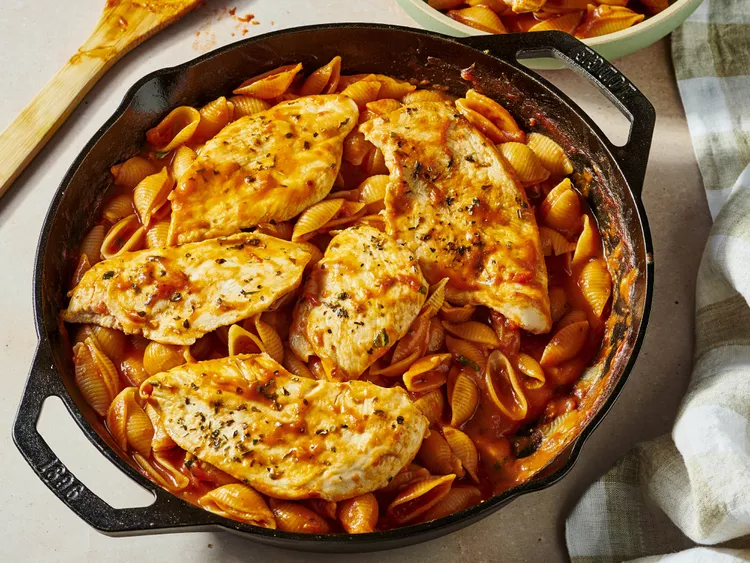

One Pot Chicken Pomodoro

Description
This one pot chicken pomodoro has a bright fresh flavor and is a fabulous weeknight meal. Pair with a salad to round out dinner.
Ingridients
Chicken
- 1 pound thinly sliced skinless, boneless chicken breasts
- 1 teaspoon salt
- 1 teaspoon garlic granules
- 1 teaspoon Italian seasoning
- 2 tablespoons olive oil, divided
Pomodoro Sauce
- 1 shallot, minced
- 4 cloves garlic, minced
- 1 (28 ounce) can can crushed tomatoes
- ½ teaspoon salt
- 1 teaspoon white sugar
- ½ teaspoon crushed red pepper flakes
- 1 tablespoon chopped fresh basil
- 1 ¾ cups chicken broth
- ¼ cup pinot grigio
- 1 pounds conchiglie pasta
Steps
- Gather all ingredients. Heat a deep cast iron skillet over medium heat.
:max_bytes(150000):strip_icc():format(webp)/ALR-8730087-one-pot-chicken-pomodoro-recipe-VAT-step-01-043904ab850148b18b7d69b227aff3d6.jpg)
- Season chicken breasts with salt, garlic, and Italian seasoning.
:max_bytes(150000):strip_icc():format(webp)/ALR-8730087-one-pot-chicken-pomodoro-recipe-VAT-step-02-cfd406ea0fa846189c82b7affacd35f4.jpg)
- Pour 2 teaspoons oil into the skillet. Once hot, add chicken. Cook until golden, turning once, about 4 minutes per side. Move chicken to one side of the skillet.
:max_bytes(150000):strip_icc():format(webp)/ALR-8730087-one-pot-chicken-pomodoro-recipe-VAT-step-03-d8eaa5c3def944a591593f7323793fbc.jpg)
- Pour remaining oil into the skillet. Add minced shallot; cook until softened, about 3 minutes. Add the garlic, stir until fragrant, about 1 minute.
:max_bytes(150000):strip_icc():format(webp)/ALR-8730087-one-pot-chicken-pomodoro-recipe-VAT-step-04-2-b8457bea871743189deb31ce542c7c6d.jpg)
- Add the crushed tomatoes, salt, sugar, red pepper flakes, and basil. Pour in chicken broth and wine. Stir to combine.
:max_bytes(150000):strip_icc():format(webp)/ALR-8730087-one-pot-chicken-pomodoro-recipe-VAT-step-05-1-930becb4606947ee91a47fb492a8591f.jpg)
- Add pasta to the skillet. Nestle chicken pieces on top of pasta. Reduce heat to medium-low. Cover, and cook until pasta is tender with a bite, about 8 minutes. Taste and adjust seasoning; serve immediately.
:max_bytes(150000):strip_icc():format(webp)/ALR-8730087-one-pot-chicken-pomodoro-recipe-VAT-step-06-7e41f96578784ffab271b725ea539f1b.jpg)
Home